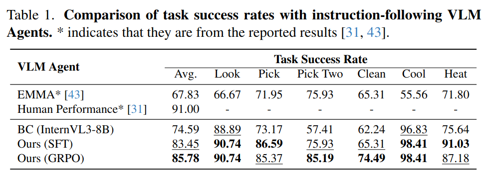
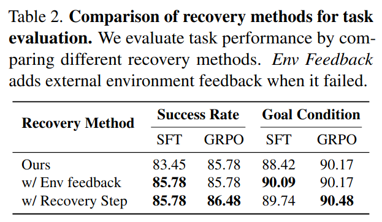
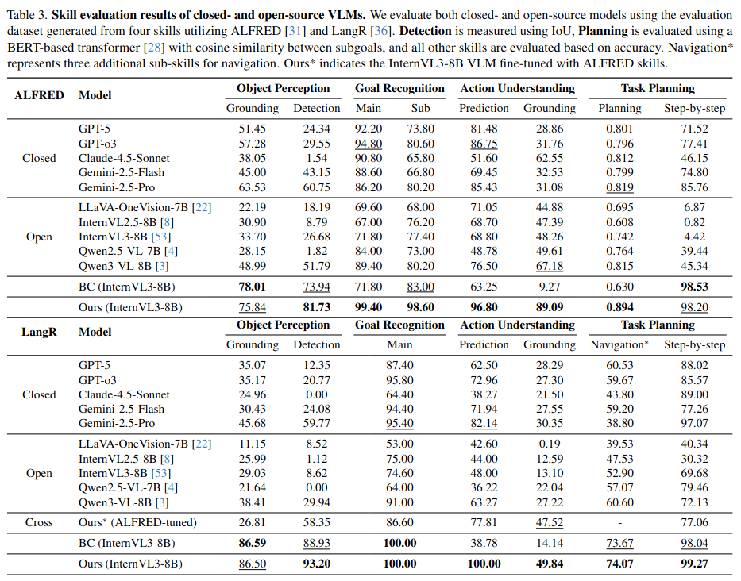
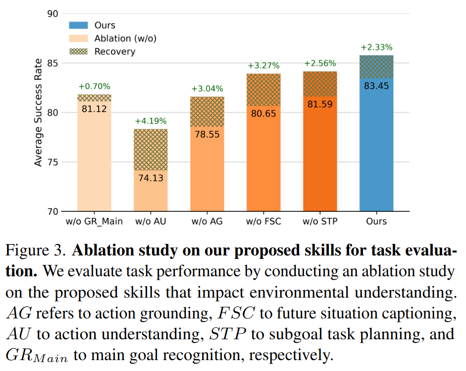
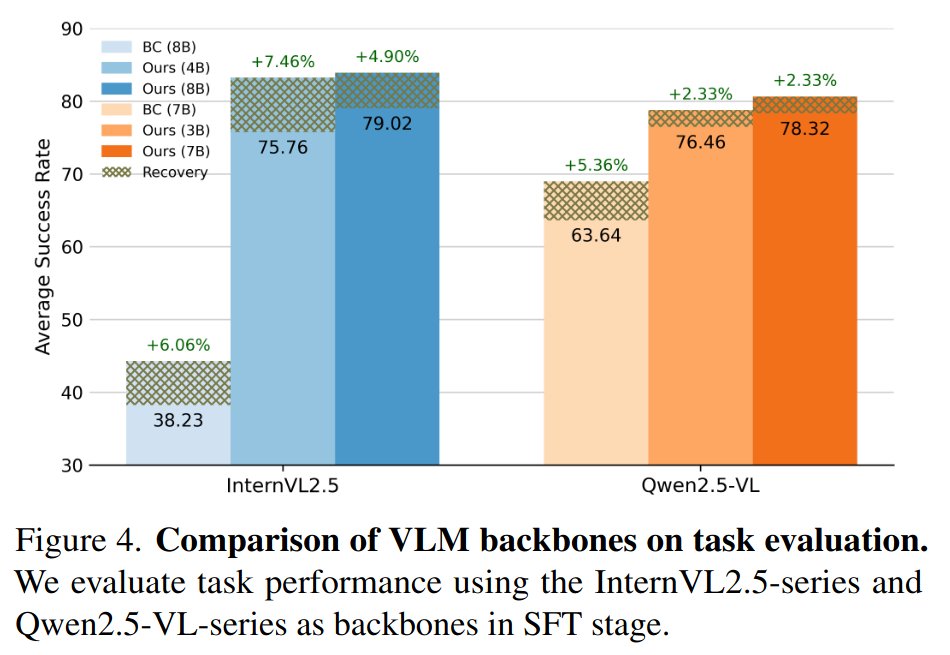
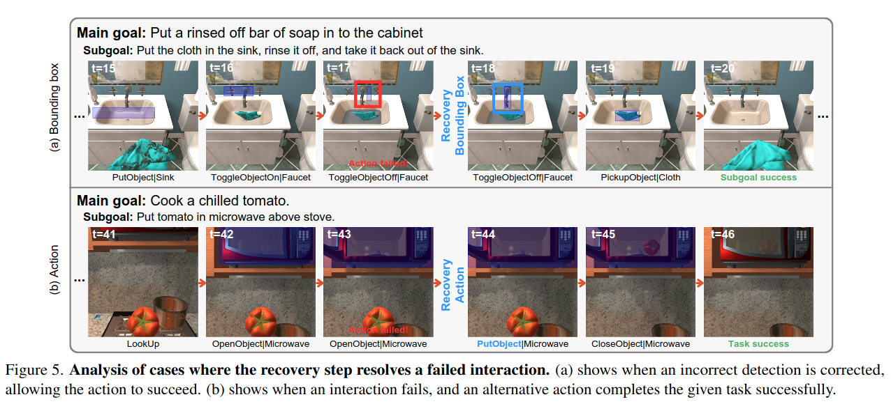

Environmental Understanding Vision-Language Model for Embodied Agent
Abstract
Vision-language models (VLMs) have shown strong perception and reasoning abilities for instruction-following embodied agents. However, despite these abilities and their generalization performance, they still face limitations in environmental understanding, often failing on interactions or relying on environment metadata during execution. To address this challenge, we propose a novel framework named Environmental Understanding Embodied Agent (EUEA), which fine-tunes four core skills: 1) object perception for identifying relevant objects, 2) task planning for generating interaction subgoals, 3) action understanding for judging success likelihood, and 4) goal recognition for determining goal completion. By fine-tuning VLMs with EUEA skills, our framework enables more reliable task execution for instruction-following. We further introduce a recovery step that leverages these core skills and a group relative policy optimization (GRPO) stage that refines inconsistent skill predictions. The recovery step samples alternative actions to correct failure cases, and the GRPO stage refines inconsistent skill predictions. Across ALFRED tasks, our VLM significantly outperforms a behavior-cloning baseline, achieving an 8.86% improvement in average success rate. The recovery and GRPO stages provide an additional 3.03% gain, further enhancing overall performance. Finally, our skill-level analyses reveal key limitations in the environmental understanding of closed- and open-source VLMs and identify the capabilities necessary for effective agent–environment interaction.
Experiment Results






BibTeX
@article{bang2025euea,
title={Environmental Understanding Vision-Language Model for Embodied Agent},
author={Bang, Jinsik and Bae, Jaeyeon and Lee, Donggyu and Jung, Siyeol and Kim, Taehwan},
year={2025},
url={https://eu-ea.github.io}
}